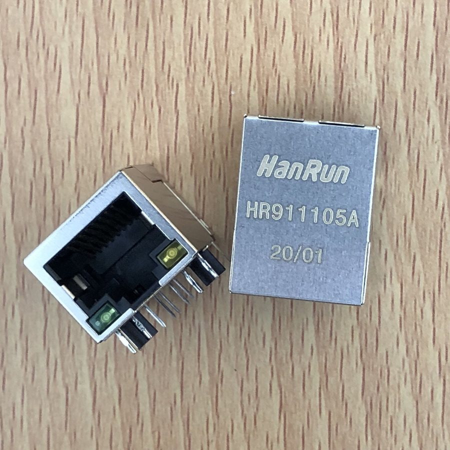

接口与逻辑 IC：板子的「翻译官」
SoC 只会 3.3V 的单端/并行信号，外面却是 RS485 的差分 ±12V 共模、CAN 的 5V 驱动、以太网的隔离变压器、USB 的 5V 电源。中间这些芯片负责电平、协议、阻抗、隔离四件事。看懂它们，你才知道一根线为什么这么接、为什么这里要 22Ω、那里要 120Ω。

读完这一章，你应该能
- 说出模拟开关的 Ron、带宽、电荷注入三个参数各自影响什么
- 解释 RS485 的 DE/RE、fail-safe、终端 120Ω 与共模范围
- 说清 CAN 收发器为什么常常 5V 供电、TXD 却能接 3.3V
- 知道以太网 PHY 与变压器、RJ45 的分工，以及 100Ω 差分与 25MHz 晶振的作用
- 判断「一根线为什么这么接」：串阻、终端、上拉分别解决什么
2.7.1模拟开关 SGM3157：便宜好用的「信号闸门」
MINI 板第 4 页有 U12/U13（SGM3157）把 CH340 的 TX/RX 在 UART1 与 UART3 之间切换。它是 SPDT（单刀双掷），一个 GPIO 决定信号走 A 还是 B。
| 参数 | 典型值 | 影响 |
|---|---|---|
| Ron | 几 Ω–十几 Ω | 串在信号里形成分压与 RC 延时；驱动负载时要算压降 |
| 带宽（−3dB） | 几十–几百 MHz | 决定能不能过高速信号；UART 115200 完全够，RGB LCD 像素时钟就要核 |
| 电荷注入 | 几 pC | 切换瞬间把电荷灌进高阻节点，形成毛刺；采样/高阻节点必须考虑 |
| VCC 与信号范围 | 0–VCC | 3.3V 供电就不能过 5V 信号，否则削顶/漏电 |
关键认知：模拟开关不是「理想导线」。它的 Ron 随信号电压变化（Ron flatness），在音频/ADC 前级会造成失真；它还有「先断后通」（break-before-make）时间，切换瞬间输出会短暂悬空。
本板用它做 UART 切换，属于「低速、数字、容差大」的场合，所以 cheap 的 SGM3157 完全够。若换成切换 ADC 输入，就要选低电荷注入、Ron 平坦的型号。
2.7.2RS485：U10 SP3485 与自动方向电路
3.3V 供电、半双工、差分 A/B。四个要点：
- DE/RE：DE 高=发送，RE 低=接收。MINI 用 Q4（SS8050）+ R23 10k + R27 22Ω + D6（MBR0520）做「自动方向」：TXD 空闲为高 → 保持接收；TXD 出现低电平（起始位）→ 立即切到发送；发送结束后靠 R27/D6 的充放电延时切回接收。省掉一个 GPIO，也避开「软件切换时序不准」的竞态。
- fail-safe：总线空闲（所有节点都接收）时差分电压应保证接收端输出高。没有内部 fail-safe 的收发器，要靠外部偏置电阻（A 上拉、B 下拉）建立 >200mV 的差分。本板 SP3485 属于带 fail-safe 的类型。
- 共模范围：−7V ~ +12V。现场地电位差、浪涌超出就会烧；所以长线要加 TVS 与共模电感。
- 终端 120Ω：只加在总线两端，中间节点不加。断电量 A/B 之间应约 60Ω（两个 120Ω 并联）——这是判断终端是否装对的快速方法。
R27 22Ω 的作用：串在 A/B 与连接器之间，限流+阻尼。外部接错线、热插拔、浪涌时它先受损，保住 U10。这与第 1.10 章的「串阻」是同一类设计。
2.7.3CAN：U5 TJA1050 与 5V 供电的尴尬
TJA1050 是经典的高速 CAN 收发器：VCC=5V，CANH/CANL 差分，最高 1Mbps。它的 TXD 输入门限按 5V 逻辑设计，但通常能接受 3.3V 高电平（VIH≈2.0V 的 TTL 门限）；RXD 输出是 5V 电平，直接接 3.3V SoC 就过压——必须分压或串阻+钳位，或选带 VIO 脚的型号（如 TJA1051T/3）。
本板把 TJA1050 用在 MINI 的 CAN 口（U5），配 R57 510R 等外围。这里正是第 1.9 章「3.3V 与 5V 能不能直连」的真实案例：同一个器件，TXD 方向能直连、RXD 方向不能。
CAN 总线终端同样是 120Ω，两端各一个；总线长度与速率成反比（1Mbps 约 40m，125kbps 可到 500m 以上）。
2.7.4以太网：PHY + 变压器 + RJ45 的分工
| 环节 | 本板器件 | 负责什么 |
|---|---|---|
| MAC | SoC 内部 FEC | 帧组装、CRC、DMA |
| PHY | U11 SR8201F | 编解码（4B/5B、MLT-3）、自适应、RMII 接口 |
| 变压器 | ATK9111A | 隔离、共模抑制、阻抗匹配 |
| 连接器 | RJ45（带磁） | 机械连接、LED 指示 |
几个容易被忽略的点：
- 25MHz 晶振：PHY 的参考时钟，RMII 模式下 SoC 与 PHY 共用 50MHz（或各自 25MHz）。频偏会直接体现为链路不稳。
- 100Ω 差分：TX±/RX± 必须按 100Ω 差分走线，等长、少过孔；否则回波损耗变差，长线误码。
- 中心抽头供电：电压型 PHY 的变压器中心抽头要接电源（常 3.3V）并加去耦，电流型则不接——接错会烧 PHY 或链路不通。
- LED 脚：链路/活动指示，极性由 PHY 的 LED 配置寄存器决定，硬件上常是「灌电流」接法。
本板 L3（220R@100MHz 磁珠）+ C13（10µF）给 PHY 电源做 π 型滤波：磁珠挡高频、电容供本地电荷。这是「数字芯片 + 模拟前端」共存的常规做法。
2.7.5USB：MT9700 电源开关与 CH340
U14（MT9700）是 USB Host 的限流开关：内部 MOS + 限流（约 1.3A）+ 热关断，EN 由 GPIO 控制。它的价值是把「外设短路」与「主板烧毁」隔开：插上一个坏 U 盘，MT9700 限流/关断，SoC 不受影响。
U7（CH340）是 USB→UART 桥，给调试串口用。它自带 3.3V/5V 选择，本板用 3.3V 侧以匹配 SoC。CH340 的 TX/RX 再经 U12/U13 模拟开关分配到 UART1/UART3——这就是「一颗芯片解决协议，一颗开关解决路由」的组合。
五个坑
① RS485 每个节点都加 120Ω：总线负载过重，驱动能力不足、通信距离骤减。
② CAN 的 RXD（5V）直连 3.3V SoC：长期过压，IO 慢慢失效。
③ 以太网变压器中心抽头接错（该接电源的接了地）：链路直接不通。
④ 模拟开关切 5V 信号却用 3.3V 供电：削顶、漏电、串扰。
⑤ USB 不加限流开关：一个短路的外设就能把 5V 轨拉塌、烧 SoC。